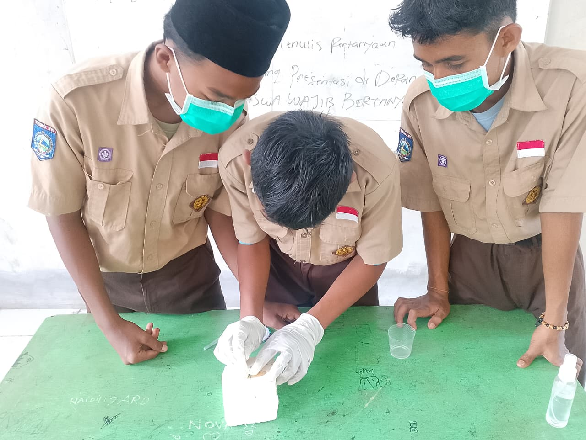

Kegiatan sekolahPembuatan Insektarium Serangga oleh Siswa Kelas IX SMP SAINS Khairul Wadi Tebuireng Lombok
Tiga siswa kelas IX praktik membuat insektarium serangga sebagai bagian dari pembelajaran IPA terapan yang melatih ketelitian dan keterampilan ilmiah. Pembelajaran Ilmu Sains dan Teknologi menuntut siswa untuk tidak hanya memahami teori,…
Baca selengkapnya